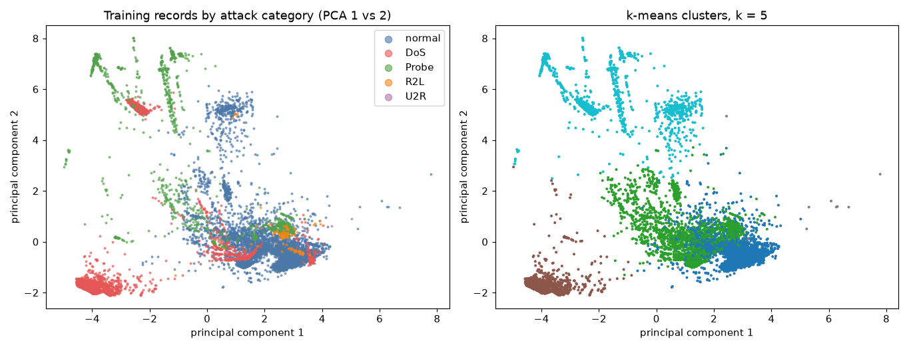
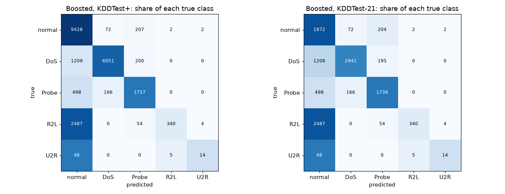

KDD on NSL-KDD: Selection, Preprocessing, Transformation, Data Mining, Interpretation. Simulated 1998-derived traffic: no claim about modern networks. Use the arrow keys or scroll.
difficulty is derived from classifier behaviour: never a feature.num_outbound_cmds constant, dropped; extreme byte counts are mostly attacks, so rows are kept.log1p takes src_bytes skewness from 191 to 0.31; 121 features; PCA: 23 components hold 95%.
Random-split accuracy vs KDDTest+ accuracy. Macro-F1 0.969 vs 0.595; 0.505 on the harder KDDTest-21.
| Boosted, KDDTest+ | DoS | Probe | R2L | U2R |
|---|---|---|---|---|
| Recall | 0.81 | 0.73 | 0.12 | 0.21 |
guess_passwd 53 training vs 1,231 test records; 0 found.
| Pattern | Verdict |
|---|---|
| S0 + SYN errors: SYN flood | real (but ~90% of DoS is one attack) |
| ICMP echo across many hosts: ping sweep | real |
| root_shell + telnet (U2R) | real, fragile (11 records) |
| guest FTP, large transfer (R2L) | does not transfer: warezclient absent from test |
| src_bytes importance | largely a 1998 tool artifact |